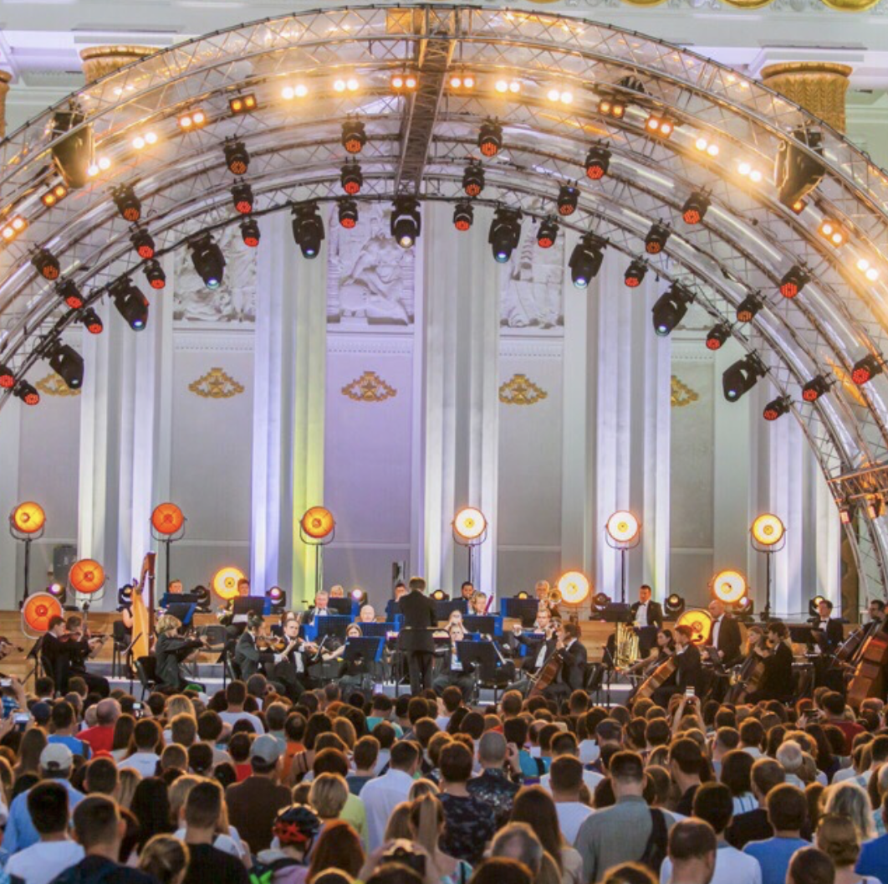
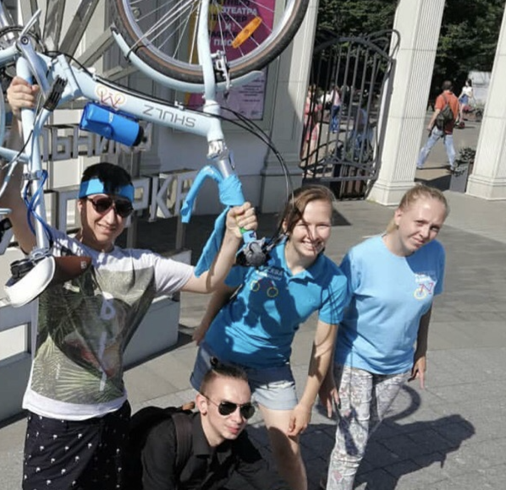
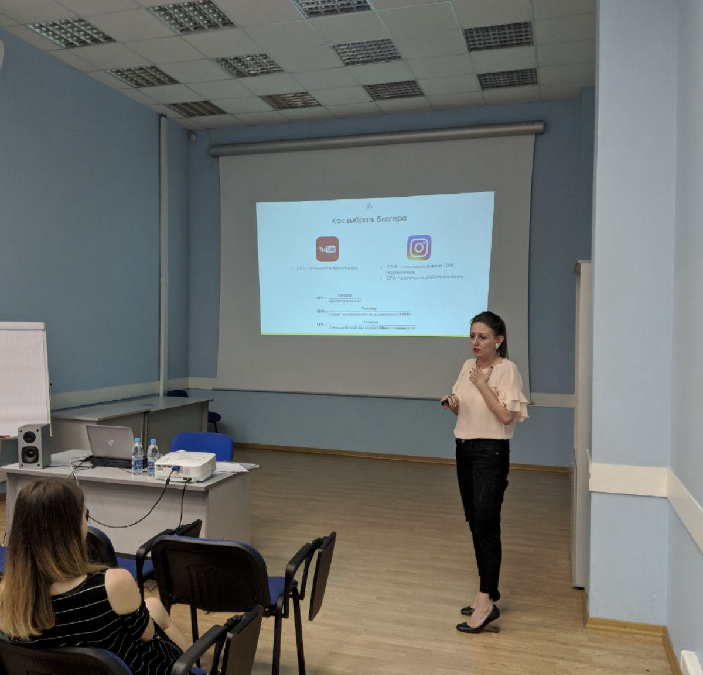

-

-

- 
- 
- 
-

Как это было?
Изменят ли технологии взаимодействие граждан и государства? Какой экономический эффект приносят смарт-технологии? Могут ли бизнес и государственные институты взаимодействовать? Ответы на эти вопросы участники Студенческих парламентских клубов узнали на лекции в институте «Стрелка». 👩🏫️
В рамках программы «Лето на Стрелке» состоялась лекция-дискуссия «Как новые технологии меняют государство». В числе экспертов — представители власти, бизнеса и глобальные исследователи Big Data. Главный тезис, который был поддержан всей аудиторией: интернет и поисковики знают о вас всё. 👨💻️
В ходе дискуссии была затронута тема взаимодействия государства и бизнеса, развитие технологий для жизни, проблема урегулирования отношений в сети. Особенно важное и интересное мнение представил руководитель Департамента информационных технологий Артём Ермолаев. Он рассказал о практике применения новых технологий в сфере управления городом. К слову, по данным международного рейтинга, Москва является лидером по применению IT-сервисов в управлении. 🏙🏆
📣— Москвичи очень требовательны, поэтому нам приходится разрабатывать новые и максимально удобные сервисы услуг, — рассказал Артём Ермолаев.
На следующей неделе молодые парламентарии посетят лекцию «Как понять поколение миллениалов» в рамках программы «Лето на Стрелке».😄👍